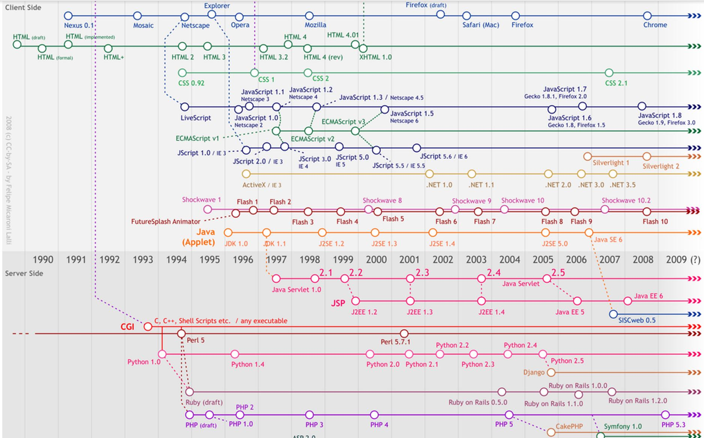
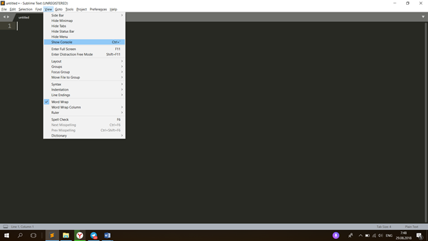
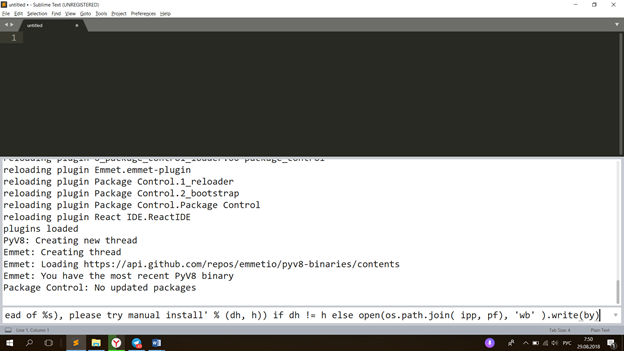
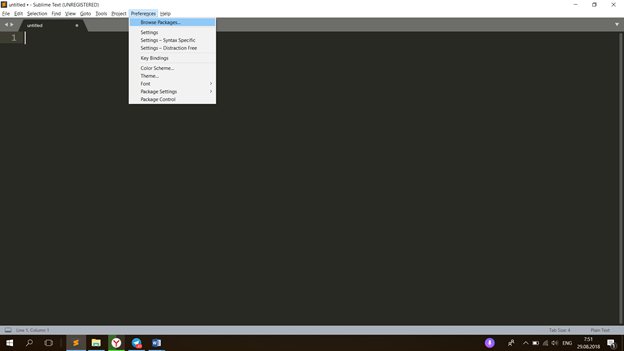
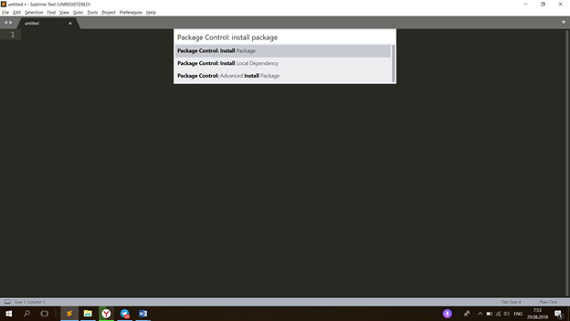
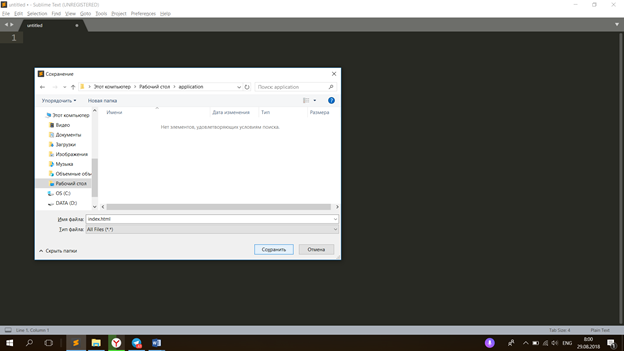
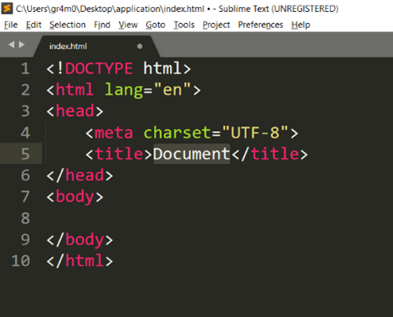
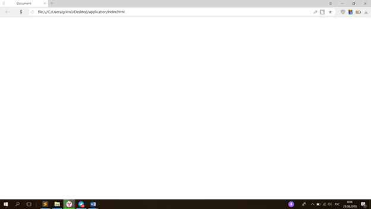
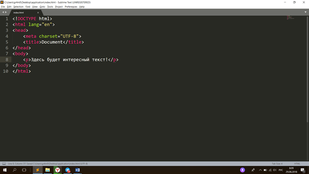
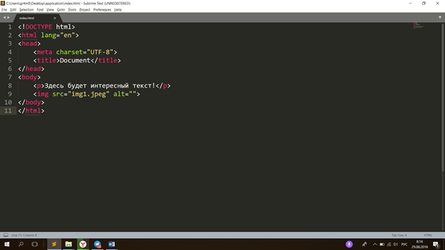

Первое занятие
Начнем с рассмотрения плана первого
занятия:
·
Что такое
веб-разработка? Какие задачи она решает?
·
Краткая
история веб-индустрии
·
HTML, CSS,
JS
·
Первая
веб-страничка
В первой части занятия необходимо теоретизировать понятия веб-разработка, веб-разработчик, фронтенд и бэкенд. Рассмотрим их по очереди. Итак, веб-разработка — процесс создания веб-сайта или веб-приложения. Основными этапами процесса являются веб-дизайн, вёрстка страниц, программирование для веб на стороне клиента и сервера, а также конфигурирование веб-сервера. Но не стоит сразу диктовать детям это сложное для понимания определение. Для построения хорошего диалога с детьми начать следует с вопроса группе: «Ребята, а вы знаете, кто такой веб-разработчик?». Необходимо выслушать ответы каждого ребенка в группе, это очень важное условие. После этого конкретизируем понятие, приводя стоящее выше определение. Теперь следует остановиться на понятиях веб-дизайн, вёрстка и программирование на стороне клиента и сервера. Здесь нужно буквально в двух словах сказать, что веб-дизайн — это разработка дизайна сайта; вёрстка — воплощение данного дизайна в жизнь (то, чем собственно мы и будем заниматься); программирование на стороне клиента — создание взаимодействия типа «клиент-браузер» или фронтенд-разработка; программирование на стороне сервера — создание взаимодействия типа «браузер-сервер» или бэкенд-разработка; Также нужно ввести понятие «сервер». Пользуемся схемой, приведенной выше: вопрос детям, а только потом правильное и точное определение. Сервер — мощный вычислительный компьютер, выполняющий сервисный задачи без непосредственного участия человека. Отлично, с первой частью плана мы закончили, переходим ко второму пункту.

Выше
приведена хронология развития веб-программирования. Следует сказать, что,
начиная с 1990 года, возникла потребность в веб-программирования, и, примерно, в
это время началось активное развития языков веб-программирования (термин «языки
веб-программирования» является явным допущением и обобщением, так как ни
HTML, ни CSS языками программирования не
являются).
Hyper Text Markup Language — язык разметки документов во
Всемирной паутине. Начало курса мы посвятим изучению основных концепций
HTML.
CSS или каскадные таблицы стилей,
используются для описания внешнего вида html-страницы.
JS или JavaScript — это многофункциальный язык
программирования (здесь приведено очень простое и краткое определение, так как
детям пока рано знать, что такое мультипарадигменный язык, и какие типы
функциональности JS
поддерживает).
Наконец, с теоретической частью занятия покончено, теперь можно открывать программу Sublime Text 3. Вот ссылка на скачивание дистрибутива http://www.sublimetext.com/3 . Для начала работы необходимо установить плагины.

Во вкладке View выбираем пункт Show Console. Далее, вставляем в консоль этот фрагмент кода:
import urllib.request,os,hashlib; h = '6f4c264a24d933ce70df5dedcf1dcaee' + 'ebe013ee18cced0ef93d5f746d80ef60'; pf = 'Package Control.sublime-package'; ipp = sublime.installed_packages_path(); urllib.request.install_opener( urllib.request.build_opener( urllib.request.ProxyHandler()) ); by = urllib.request.urlopen( 'http://packagecontrol.io/' + pf.replace(' ', '%20')).read(); dh = hashlib.sha256(by).hexdigest(); print('Error validating download (got %s instead of %s), please try manual install' % (dh, h)) if dh != h else open(os.path.join( ipp, pf), 'wb' ).write(by)

Нажимаем Enter. По окончании загрузки выбираем пункт Preferences -> Package Control (да, необходимо закрыть консоль View -> Hide Console)


Install
Package -> нажимаем Enter
В открывшемся окошке пишем слово «Emmet» и нажимаем Enter, либо выбираем первый пункт (у меня его нет, так как он уже установлен).
Отлично, мы почти у цели. Теперь мы обладаем одним из лучших инструментов для веб-разработки. Emmet — это плагин, предоставляющий функционал автодополнения для html и css кода.
Переходим к созданию первой html-странички.
Нажимаем сочетание клавиш Ctrl+S и сохраняем файл с названием index.html.

Сохраняем, далее, пишем восклицательный знак и нажимаем клавишу TAB.

Вот, что
мы должны получить
в
результате. После этого
нажимаем
сочетание клавиш
Ctrl+S и сохраняем файл.
Отлично, мы создали нашу первую веб-страницу! Теперь можно посмотреть на результат наших усилий находим файл index.html и открываем его в браузере.

Вот так на данный момент выглядит наша страница. Добавим какого-нибудь контента, например, текст.

Сохраняем документ, заходим в браузер и нажимаем в нем сочетание клавиш Ctrl+R для перезагрузки страницы.
Теперь
вставляем картинку в папку с нашим index.html
Далее, пишем небольшой кусок кода для добавления картинки на нашу страницу.

Сохраняем документ, заходим в браузер и нажимаем в нем
сочетание клавиш Ctrl+R для перезагрузки страницы.
Отлично!
Остаток
занятия можно посвятить вставки разнообразного текста и картинок на
веб-страницу.